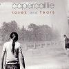

Celtic Lyrics Corner > Artists & Groups > Capercaillie > Roses And Tears > Leodhasach An Tir Chein
|  | Leodhasach An Tir Chein |
| Credits : | Murdo MacDonald |
| Appears On : | Roses And Tears |
| Language : | Gàidhlig (Scottish Gaelic) |
| Lyrics : | English Translation : |
| Tha mi fo mhulad bho sheol mi | I am sorrowful since I set sail |
| A Leodhas, eilean mo ghraidh | From Lewis, my beloved isle |
| Far na dh'fhag mi comunn na h-oige | Where I left the group of youngsters |
| Is mo chairdean uile ri tamh | And all my relatives dwelling |
| Cha phill rium tuilleadh gach solas | No longer will every comfort be with me |
| 'S nach goraich bh'agam nam phaisd | And every folly I had in my youth |
| Mo chridhe air a lionadh le dòrainn | My heart filled with hardship |
| 'S mo chomhnaidh thairis air sàl | As my dwelling is over the sea |
| Mo chiabhag tha tana 's air liathadh | My hair has thinned and gone gray |
| O' s cian bho dh'fhag mi do bhagh | It has been long since I left your bay |
| Mo chridhe tha g'osnaich gad iargain | My heart sighing being burdened |
| Is m'iarrtas tilleadh gach la | With my wish to return every day |
| Ged 's torrach am fearann 's fo chraobhan | Although every piece of land is fertile and abounding in trees |
| Cha luiginn fuireach na phairt | I wouldn't wish to live in any part of it |
| Bu mhath leam bhith trusadh nan caorach | I would prefer to be gathering up my sheep |
| 'S an fhraoch an eilean mo ghràidh | Amongst the heather of my beloved isle |
| O nach robh mise far 'n iarrainn | Was I not under the scythe |
| An Siadair Iarach a' tamh | Dwelling in Lower Shader |
| Far na dh'fhag mi comunn bha rianail | Where I left a group who were organized |
| Aoidheil, carthannach, tlath | Welcoming, charitable and kind |
| Chan iarrainn a shonas gu siorraidh | I wouldn't want everlasting prosperity |
| Chan iarrainn solas gu brath | I wouldn't ever want solace |
| Ach dachaigh bhith agam na chriochan | But to have a home in the borders |
| Fo riaghladh na Athair na Slaint' | Under rule of the Father of Health |
| Togaidh mi fhathast na siuil rithe | I will still lift my eyes to her |
| Ma chaomhnas Dia rium mo shlaint' | If the Lord spares my health for me |
| 'S gu faigh mi fom shealladh na stùcan | And I get under my sight the little hills |
| Bha muirneach agam nam phaisd | That were precious to me in my youth |
| Nuair ruitheas mo laithean san t-saoghal | When my days in the world run out |
| B'e mo dhurachd faighinn ann bas | It is my wish to die there |
| 'S mo charadh an taic ri mo shìnnsir | And laid beside my ancestors |
| 'S a ghlìb ri creagan na h-Aird | In the glebe amongst the rocks of Aird |